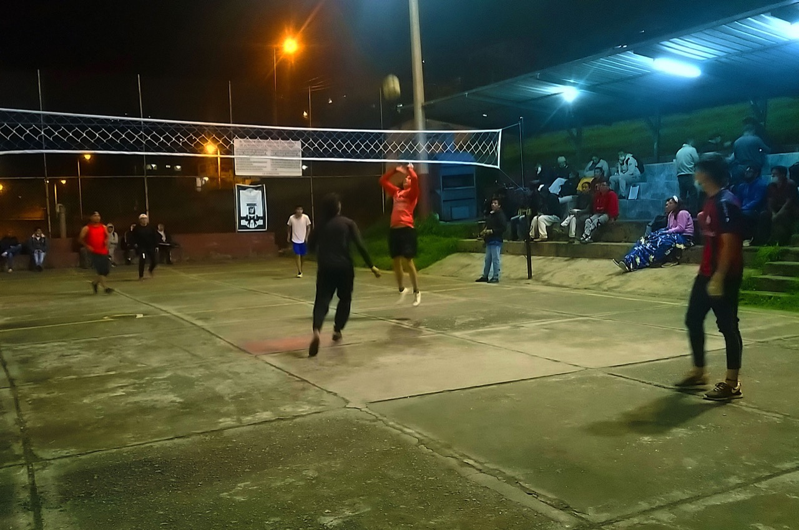

Reglas básicas del ecuavóley
El ecuavóley se juega con dos equipos separados por una red. Las reglas específicas pueden variar según el torneo o la localidad.
Pasos generales de una jugada
- Los equipos se ubican a cada lado de la red.
- Un jugador realiza el saque para iniciar la jugada.
- El equipo receptor organiza la devolución del balón.
- La jugada continúa hasta que ocurre una falta o termina el punto.
Materiales y elementos necesarios
- Una cancha delimitada.
- Una red colocada en el centro.
- Un balón adecuado para la práctica.
- Dos equipos de tres jugadores.
- Un sistema de puntuación acordado.

Conceptos que debes conocer
- Saque
- Acción con la que comienza una jugada.
- Red
- Elemento que divide los dos campos.
- Punto
- Unidad de puntuación obtenida al ganar una jugada según las reglas aplicadas.
- Equipo
- Conjunto de tres jugadores que colaboran durante el partido.